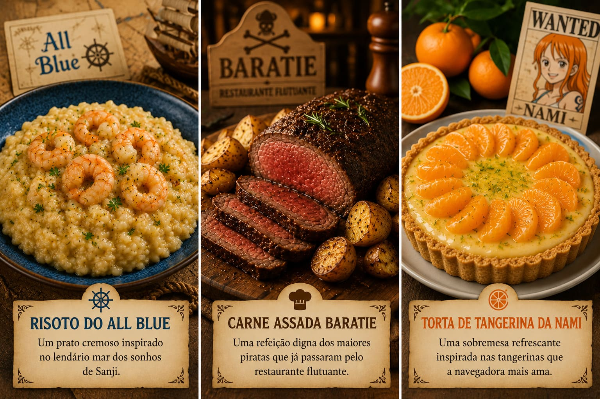

Bem-vindo ao Baratie

Explore receitas inspiradas no universo de One Piece e descubra pratos temáticos criados para representar os mares, personagens e aventuras dos Chapéus de Palha.
Navegue pelo menu, escolha uma receita e veja os ingredientes, modo de preparo, tempo, rendimento e dicas do chef.